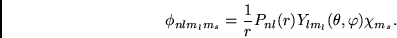

| (3) |
The approximate wave function
 of the state labeled
of the state labeled  is:
is:
| (4) |
|  | (5) |
The traditional mchf program has been extended to
accomplish a simultaneous optimization of energy expressions derived from
several different terms or even several eigenvalues of the same term.
Additionally, the energy energy functional is represented as a
weighted average of energy functionals for expansions of wave functions
for different LS terms or parity. This approach facilitates the
Breit-Pauli calculations for complex atomic systems, while previously
somewhat arbitrary methods have been applied (cross-wise optimization,
 ).
).
mchf was modified for systematic, large-scale methods using
dynamic memory allocation and sparse matrix methods. All orbitals
in a wave function expansion are assumed to be orthonormal.
Configuration states are restricted to at most eight (8)
subshells in addition to the closed shells common to all configuration
states. The maximum size is limited by the available memory and disk
space. The wave function expansions are obtained from orbital sets
of increasing size, allowing for the monitoring of convergence.
The Davidson algorithm [#!dvdson!#] is applied for finding the
needed eigenvalues and eigenvectors. In this version of the code,
non-orthogonality is not supported. In the present atsp2K_MCHF package, it is not foreseen that optimization would be
over different parities, only over different terms of the same parity,
and we refer to this as "simultaneous optimization".
Suppose  represents and energy functional for term
represents and energy functional for term  and eigenvalue
and eigenvalue  , assuming orbitals and also wave functions are
normalized. Then optimization was performed on the functional
, assuming orbitals and also wave functions are
normalized. Then optimization was performed on the functional
Estimates of the radial wave functions are taken from the file wfn.inp, if provided. Otherwise, hydrogenic estimates are used.
Upon completion (either a maximum of 200 iterations or a change in
the weighted average energy of less that  a.u., in default
mode) an updated wfn.out file is produced. During the course
of the calculation an intermediate orbital results are written to the
wfn.out file, for restart purposes in case of process termination
for some reason.
a.u., in default
mode) an updated wfn.out file is produced. During the course
of the calculation an intermediate orbital results are written to the
wfn.out file, for restart purposes in case of process termination
for some reason.
 |
Figure 5.12 shows the data structure of the interaction matrix (hmx) and the associated pointers (ico and ih). For each nonzero matrix element ico accounts for the number of total angular coefficients as the matrix is traversed in the direction of the arrows. The row index of each non-zero element is stored in ih.
Each coefficient data structure consists of two quantities:
| coeff | numerical coefficient (double precision) |
| inptr | index pointer to an integral (integer) |
During the initial phase of data initialization, data() allocates memory for the problem, the details are covered in section 5.3.
The scf() algorithm is the most CPU intensive part of the mchf program. It is an iterative process with two sequential phases in each iteration: solving the differential equation, then, finding the eigenvalue problem 5.10.
 |
The first phase solves the differential equation for each
radial function and finds the sets of radial functions
 , Figure 5.14.
, Figure 5.14.
The routines applied to this phase are shown on Figure 5.15
In the next phase the eigenvalue is solved, and the mixing coefficients are updated.
During this phase diag() performs the process referred to as a "simultaneous optimization" in three distinctive steps. During the first step the matrix elements are assembled and the matrix diagonalized. Diagonalization occurs in the one of the routines diag_memory_all(),diag_disk_clst(), diag_disk_ico(),diag_disk_hmx(). The differ in the storage methods which are used as function of available memory. The main loop is over all coefficients, tt coeff, which are contained in file c.lst. It is a complicated loop with a number of logical statements and it includes single and double precision arithmetics, this reduces the optimization of the Mflop performance to less than 30% of theoretical possible for floating point calculations. The fastest routine is diag_memory_all(), it does not include any disk IO. The main loop is shown below:
do ii = 1, n_cf;
n_count_tmp = ncoef+ii
if (ii.gt.ico(nijcurr+nz)) nijcurr = nijcurr + 1
hmx(nijcurr) = hmx(nijcurr) +
: coeff(n_count_tmp)*value(inptr(n_count_tmp))
if (nijcurr.gt.jptr(jjh)) then
jjh = jjh + 1;
max_col = max_col+1
end if
end do
This fragment combines the matrix elements based on the information about the column index ico, the column pointer jptr and the coefficient coeff. The rest of the diag_*() routines perform the same task, however apply disk IO to a various degree, with the worst case being diag_disk_hmx(), which reads each of the files c.lst, ih.nn.lst, ico.lst.
The next step computes the selected eigenvalues using the Davidson algorithm. The eigenvectors for each requested eigenvalue are saved and applied for updating the coefficients. This steps proceeds consequently for each block, after the last step the weighted total energy is computed an displayed during each iteration.
The optimization is performed on the functional
The listing below shows the complexity of the coefficient updating process.
if (iblock == 1) ncoef = 0;
do i = 1, cf_tot(iblock);
n_count_tmp = ncoef+i
if (i.gt.ico(nijcurr)) then
nijcurr = nijcurr + 1
* .. have we also changed column?
if (nijcurr.gt.jptr(max_col)) then
jjh = jjh + 1;
max_col = max_col+1
end if
end if
iih = ihh(nijcurr)
im1 = 0;
do j = 1,maxev
ioffw = (j-1)*ncfg
if (leigen(j,iblock)) then
wcoef = eigst_weight(j,iblock)
W = wcoef*wt(ioffw+iih)*wt(ioffw+jjh)
T = W*coeff(n_count_tmp)
IF (IIH .NE. JJH) T = T+T
coef(inptr(n_count_tmp)) = coef(inptr(n_count_tmp)) + T
if (last) then
W0 = wt(ioffw+iih)*wt(ioffw+jjh);
T0 = W0*coeff(n_count_tmp);
IF (IIH .NE. JJH) T0 = T0 + T0;
itmp_s = (inptr(n_count_tmp))+idim*im1;
tmp_coef(itmp_s) = tmp_coef(itmp_s) + T0;
im1 = im1 + 1;
end if
end if
end do
end do
Figure 5.18 shows the implementation and the call sequence in diag().
 |
There are special storage requirements for each step: Arrays (hmx_diag), inptr, coeff and ico are accessed only once. In contrast, the iterative solution of the eigenvalue problem (dvdson) requires multiple read access operations on the interaction matrix (only hmx and ih are used). Therefore, higher priority for storing in memory was given to hmx and ih. After dvdson the memory used in diag_hmx and dvdson is deallo cated and used in updatc. Finally, updating the coefficients requires a single access to ih, and ico suggesting higher priority for ico over coeff. Table 5.3 shows the multilevel storage scheduling derived from the frequency of data access. The storage scheduling will depend on the size of the problem and the system capacity and mchf is designed to select the best level with respect to computational efficiency.
The SCF process has two phases which are totally disjoint, the array of contributions to the energy functional, and the array of integral values may share the same memory.
To maximize the memory utilization, the storage of all arrays is allocated in a stepwise fashion. Upon memory allocation failure, the remaining arrays are stored on disk. Under this scheme the order in which arrays are allocated becomes important and the arrays used most frequently at each SCF iteration are allocated first. The angular coefficient data and the interaction matrix are the two major data structures which define the memory use for each scf iteration. As the number of configurations grows the memory capacity may be exceeded thus requiring some or most of the data to be stored on disk. Disk read/write operations are then performed on each SCF and DVDSON iteration. Disk read/write access is considerably slower compared to memory access. In order to accomplish high computational efficiency it is essential to avoid disk I/O and keep all data in memory. Therefore, optimizing mchf for large scale calculations requires management of the disk/memory data storage. In general, the angular coefficients, the interaction matrix elements and the associated pointers are stored in one dimensional arrays. The arrays of angular coefficients are considerably larger than the interaction matrix.
The memory allocation process (alcsts), starts with Level 4 and upon success on each level may proceed up to Level 1. At Level 4, if no memory is available for performing Dvdson iterations on disk (vector-matrix multiplication on disk) the program exits. (This will represent a very large case beyond practical limits for serial computing: in the order of millions of cfgs). If the program cannot proceed with allocating memory for the interaction matrix of the largest block, a similar, local scheme (in diag) is used to allocate memory for each block. Blocks can vary significantly in size and in order to improve the performance mchf is designed to keep smaller blocks in memory if possible.
As shown in table 5.3, levels 1, 2, and 3 ico has higher priority compared to coeff and inptr because ico is used in both diag and updatc routines. However, it is important to note that updatc proceeds almost always in memory since all of the memory used in diag_hmx and dvdson is deallocated and made available.
The memory allocation procedure relies on malloc() and free(), which are C routines normally used for dynamic memory management. malloc() allocates size bytes and returns a pointer to the allocated memory. If the request fails malloc() returns a NULL pointer. The atsp2K package includes the routines alloc() and dalloc() which use a similar approach, however upon failure alloc() aborts by calling EXIT(). mchf has several levels of memory allocation requiring the returned pointer to be monitored in order to adjust the subsequent memory requests. For this purpose two routines specific only to mchf have been introduced: diag_allocate() and diag_deallocate(). If the memory is not sufficient for loading the array under consideration in the memory, then, memory for the largest column of that array is allocated and the array is stored on disk.
The summry file also contains some additional information including
The scf() iterations has exactly the same structure as described for the serial mchf. The first phase solves the differential equation for each radial function with the following sequence, Figure 5.14. Then, during the second phase, diag() solves the eigenvalue problem and updates the integral coefficients of the radial functions, Figure 5.16.
mchf performs complicated computational tasks, including parallel and serial I/O, complex arithmetic loops, and matrix algebra. The efficiency of mchf is a function of the number of processors, it significantly drops below 0.6 when more than 16-24 processors are used. The time consuming operations are coefficient updates and matrix diagonalization, and in the exchange procedure. The parallel version, mchf_mpi, is structurally similar to the serial mchf program. However, it has only two level of memory allocation: Level1, all arrays are in memory, and Level 2, coeff, inptr are on disk and hmx, ih, ico are stored in memory. It is assumed that the number of processor can be increased as needed so that all data is stored in memory. The speed of iteration may show a considerable decrease when all of the data is on disk, as opposed to have all data in memory.
 |
The IO files used by mpi_mchf can be divided into two categories based on their use:
Details about the format and each entry are given in chapter 13.16.